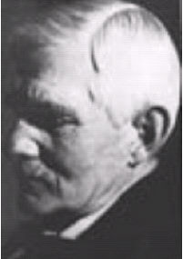

|  |
Sturge-Weber syndrome = A congenital disorder involving the brain, skin and eyes.
Rendu-Osler-Weber disease = A familial syndrome characterised by multiple telangiectasia of the skin, and of the oral, nasal, conjunctival and gastrointestinal mucous membranes.
Frederick Parkes Weber was the son of Sir Hermann David Weber (1823-1918), who came to England from Germany as a young man and became physician to Queen Victoria. The middle name "Parkes" was derived from his father's great friend, Sir Edmund Parkes and in time this forename became coupled with his surname, so that he was generally known as "Parkes Weber". He was educated at Charterhouse School, Cambridge University and studied medicine at St. Bartholomew's Hospital, London, as well as in Cambridge, Paris, and Vienna.
Weber obtained his doctorate at Cambridge in 1892 and after qualification held resident posts at St. Bartholomew's Hospital as House Surgeon and House Physician, and at the Brompton Hospital for Chest Diseases as house physician, before being appointed as honorary physician to the German Hospital, Queen Square, London, in 1894. In this capacity he carried on with his duties until he reached his 80th year. He was also physician at the North London Hospital for Consumption. From 1899 to 1911 he was first assistant physician, then physician at the Mount Vernons Hospital for Chest Diseases. In 1921 Parker was the first Mitchell Lecturer at the Royal College of physicians.
Weber remained active at the Royal Society of Medicine until after the age of 90 years. Over a span of 50 years he wrote over 1.200 medical articles and contributed to more than 20 books or chapters.
Like his father he was a keen alpinist and collector of coins and vases, which towards the end of his life he donated to museums. Among his many fascinating articles was one on death in the arts, 1910, and he also wrote books on the philosophy of medicine.
Bibliography:
- Des amyotrophies. Paris, 1889.
- On the association of chronic intestitial nephritis with pulmonary tuberculosis.
- Muscular cramp in relation with the phenomena of angina pectoris.
- Cirrhosis of the liver and icterus of 4 years standing.
- The mineral waters and health resorts of Europe.
- Les paralysies générales progressives. Paris, 1898.
- Abscès cérébral.
- Syphilis cérébrale.
- Tumeurs cérébrale.
- Climatology. Written with Guy Hinodale.
- A note on cutaneous telangiectases and their etiology. Comparison with the etiology of haemorrhoids and ordinary varicose veins.
- Pathology of old age.
- Hydrotherapy and balneotherapy. With Sir Hermann Weber.
- Multiple hereditary developmental angiomata (telangiectases) of the skin and mucous membranes associated with recurring haemorrhages.
- Angioma formation in connection with hypertrophy of limbs and hemihypertrophy.
- Climatology and balneotherapy.
- Polycythaemia and erythraemia.
- Aspects of death and correlated aspects of life.
- Pseudo-bulbar Paralysis.
- Traumatic pneumonia and traumatic tuberculosis.
- Maladies des méninges.
- Polycythaemia, erythrocytosis and arythraemia.
- Pathologie générale évolutive. Paris, 1921.
- Haemangiectactic hypertrophy of limbs - congenital phlebarteriectasis and so-called varicose veins.
- Haemorrhagic telangiectasia of the Osler-type «telangiectatic dysplasia» and isolated case, with discussion on multiple pulsating stellate telangiectases and other striking haemangiectatic conditions.
Doctoral thesis. Cambridge, 1892.
American Journal of the Medical Sciences, Thorofare, N.J., 1894.
British Medical Journal, London, 1896.
Written with Sir Hermann Weber (his father). London, 1898.
3rd edition, London, Smith, Elder & Co, 1907, under the title of Climatology and balneotherapy.
In: Paul Camille Hippolyte Brouardel (1837-1906) and Nicolas Augustin Gilbert (1858-1927): Traité de médecine. Paris, 1901.
In: Brouardel and Gilbert: Traité de médecine. Paris, 1901.
In: Brouardel and Gilbert: Traité de médecine. Paris, 1901.
In Salomon Solis Cohen’s (born 1857): The System of Physiologic Therapeutics. 2 volumes; Philadelphia 1901 and 1902.
Edinburgh Medical Journal, 1904: 346-349.
Rendu-Osler-Weber disease.
In Thomas Clifford Allbutt (1836-1925) and Sir Humphrey Davy Rolleston (1862-1944): The System of Medicine, 2nd edition, volume 1. Philadelphia, 1905.
In Allbutt and Rolleston’s The System of Medicine. 2nd edition, volume 1. Philadelphia, 1905.
Lancet, London, 1907; 2: 160-162.
Rendu-Osler-Weber disease.
British Journal of Dermatology, Oxford, 1907, 19: 231.
Written with his father, Sir Hermann David Weber.
London, Smith, Elder & Co, 1907.
In Allbutt and Rolleston, The System of Medicine. 2nd edition, volume 5. Philadelphia 1909.
In Allbutt and Rolleston’s The System of Medicine, 1910.
Saint Bartholomew’s Hospital Reports, London, XXIX.
In Allbutt and Rolleston’s The System of Medicine, 1916.
With others. Nouveau traité de médecine, Paris, 1912.
In Allbutt and Rolleston’s The System of Medicine, 1921.
British Journal of Children’s Diseases, 15: 13; 1918.
British Journal of Dermatology, Oxford, 1936; 48: 182-193.
Rendu-Osler-Weber disease.